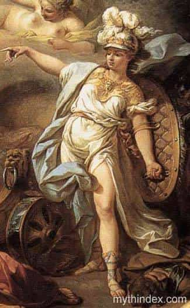

< < < Back
Sharpen Your Tribal Instincts To Lead In Modern Society – Return Of Kings
In the olden days, when civilization was strictly hierarchical, a man’s value and status was determined by his lineage or how he could ascend to the top. There were many problems with this, namely bloodshed, foul play, manipulation, and nepotism. However, the hierarchy did serve a purpose: to bring order and structure to tribes. Those leaders who seemed to be just and competent were able to expand their civilizations and gather many resources (and vaginas).
However, these days, such outright thirst for power and resources only signals neediness and weakness. What happened? What changed? More importantly, what must the modern man become to lead his modern tribe to the promise land?
In essential, my argument is that the evolution of a freer society will necessitate a man to use age-old intuitions to shape the new world according to his standards and values. He does so by defining what his modern tribe means to him, and to sharpen and channel his aggression to protect and further its influence.
What is the modern tribe?
We are ancient beings living in a technological world. Although we surround ourselves with technology and would like to believe that our days walking the plains of Africa are far behind us, the truth is that our brains still contain the beliefs and impulses of those days. The more we try to repress this, the more troubling they become to us. The more we distract ourselves with frivolous activities, the more depressed we become.
The answer is not to abandon technology altogether (though some have taken this extreme route). The answer is to realize that technology is a tool used for us to express our purpose. So then this expression of purpose becomes the core of what I define as the modern tribe. This tribe is not defined by a set of particular physical traits, or physical boundaries, or by our chosen names.
This tribe is defined by our ideas and how we carry them from inception to fruition.
Who belongs to your tribe?
Through this purpose, and all the trials and tribulations that it, and you, will go through, that your intuitions as a modern leader will sharpen and harden into true personal power that you can use to influence others. Who are the others? They are those who hold and cherish the same values and ideals as you do. They deserve to be protected and taken care of by you. They serve your purpose just as you serve their well-being. They give you something to live for, and if necessary, to die for.
Understand that the modern tribe is constantly in flux according to new information and ideals. However, your core set of values will remain constant and hardened. At the outer edges of this tribe, there are the people who share hobbies and interests with you. They interact with you in a fairly regular basis, but at a low amount of engagement. At the middle layer of your tribe, those who labor alongside you, but don’t necessary share all of your visions and objectives. They are here because your interests overlap with them for the time being. Once that change, they will no longer be there.
At the core is where those who believe in you and your beliefs sit. These people are often not who you grew up with or share demographics with at all. They may come from an entirely different set of circumstances. However, they share a common set of values and beliefs with you. Robert Greene remarked in his book the 50th Law that he and 50 Cent share more ideals and visions than anyone of his other close associates ever will. Your job in life is to seek out these people and work tireless with them.
What does it mean to be a leader?
Through my years of schooling, university, and even a job at a top consulting firm, no one has been able to concretely describe to me what a leader truly is. It was not until I got into game that it became overly clear to me than a leader is someone who seeks moments of danger and overcomes his fears through them. There are other traits, such as confidence, charisma, vision, etc., but I can always argue that these qualities are developed through the constant facing of one’s own vulnerabilities. The thrill of overcoming one’s own fear is so exhilarating that it injects pure adrenaline and endorphin to the brain, creating feelings of fearlessness and untold personal powers.
The leader of the modern tribe needs to have the initiative and authority, which comes from the Latin word author, which means to create ideas, to seek out challenges and overcome them. Without it, he is simply an empty throne. This is true today as it was hundreds of years ago. To breathe meaning and life into your purpose, you must embody it every day and every moment. Any lapse in consciousness and others will find a way to attack it. Or worse, your own mind will find a way to subvert through a myriad of distractions and procrastinations.
What do we worship?

Whether or not you subscribe to a religious belief, your brain is wired to find something to worship. Even when religious icons and dogmas fade, new brand symbols and mottos will drive you to value them even more than life itself. Instead of resisting this desire, which becomes a form of worship itself (think of the anarchy symbol), you can create and channel this desire into a positive and self-fulfilling one.
Think of the goddess Athena. She embodies wisdom and stoicism in how we face our challenges and enemies. She is a worthwhile ideal to worship if your values align with hers. The matter of fact is that every tribe will need some sort of symbol or ideal to worship. And as the de facto priest, you will need to be careful with how you craft this form of worship. People (including yourself) always need something to believe in, something to fight and sacrifice for, so why not make this symbol a positive and truly transcendent one?
What is your brand and icon?
In this modern tribe, where every aspect seems chaotic and changing, you need to have a brand and symbol to strive for. To expand your sphere of influence, you will need to be an entrepreneur without the bloodshed or greed. You will need to lobby and hustle. You will need to defend and challenge. You will need to grow and suffer a little bit because of it. Actually, make that a lot of suffering. They don’t call it a passion for no reason.
In the true entrepreneurial spirit, you will seek out new ideas and people to invest in. Seek out those who share the same values and styles as you. This is the hardest but the most rewarding aspect of being an entrepreneur in the new world.
What about the feminine?
As you channel all the forces of conscious to create and define your modern tribe, which can be liken to a masculine force (defined by logic and consciousness), there will be positive and negative feminine forces which encourage but also damage your ship. Feminine forces are free-flowing without rhyme and reason. These forces are very attractive for truly masculine forces. However, without proper management, these forces can also be damaging. Just as the wind can propel a sailboat, it can also create a storm to knock it down.
The best approach to this force is to establish clear values and boundaries for them to flow into and around. The positive forces will propel and inspire you, while the negative forces will simply flow around and away from you.
I speak of the feminine force in general (instead of women) because these forces can also come in the form of other irate and irrational men. They exhibit lack of consciousness and self-control, and their needs will pull you along and destroy your ideals if you are not careful.
Why should you establish your modern tribe?
As Dr. Nathaniel Branden stated in his book, The Six Pillars of Self-Esteem,
A life without purpose is hardly one worth living
As you work to find a sense of purpose and meaning to your days, you will find that you need help from others as well as well to lead others to do the same. These desires are not by chance. This is how men have learned to lead and cooperate with others through centuries of evolution. Naturally, this mind meld creates a sort of tribe (or cult, in some extreme religious ideals). These tribes were divided between geography, and consequently, similar physical features.
However, to overcome modern challenges and establish a sense of purpose that we all need to live fulfilling lives, we will form virtual tribes and niches. Ultimately, however, every man will be his own tribe, his own brand, and his own set of values. Though he may share it with others and encourage them to do the same, he alone must face his demons and depend on no one else to do it for him.
That is what it means to live in a modern tribe, and become a modern man.
Read More: The 10 Most Important Principles of Leadership